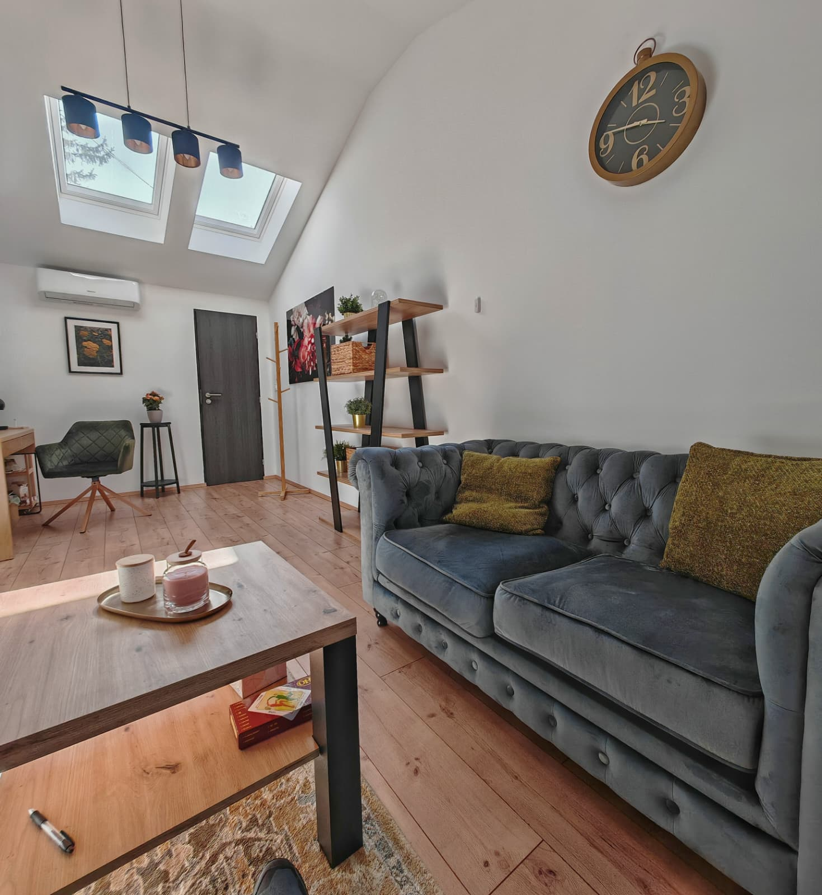
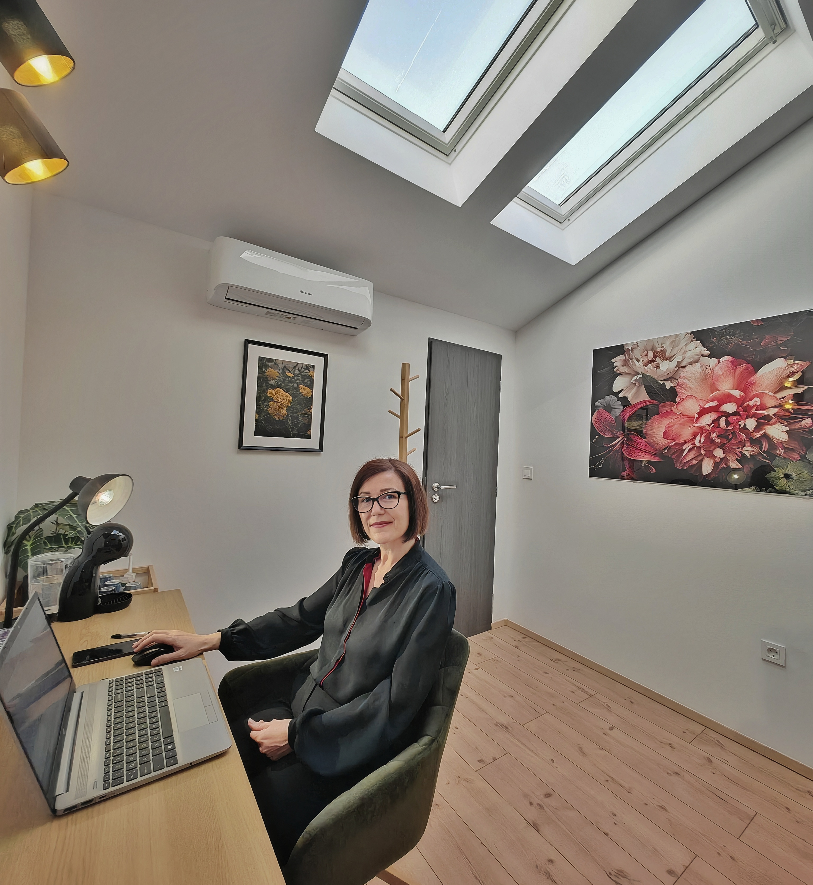

Partnerska psihoterapija
Velika Gorica
Ne morate kroz ovo prolaziti sami. Postoji prostor gdje ćete biti viđeni, shvaćeni i podržani - zajedno.
Dogovorite prvi razgovorŠto je partnerska psihoterapija?
Partnerska psihoterapija je siguran prostor u kojem par može bolje razumjeti vlastite obrasce, čuti jedno drugo na dubljoj razini i razviti zdravije načine komunikacije i povezivanja.
Fokus nije na tome tko je „kriv", nego na dinamici između vas. Kako se povređujete, kako se branite, kako se udaljavate i što vam zapravo treba ispod svega toga. Cilj je graditi odnos u kojem se oba partnera osjećaju viđeno i uvaženo.
Partnerska psihoterapija nije samo za krize. Neki parovi dolaze jer žele graditi odnos svjesnije i kvalitetnije, prije nego što se pojave ozbiljniji problemi.

Možda je ovo ono što se događa kod vas
Kad se u odnosu ponavljaju isti konflikti, kada se osjećate udaljeno ili kao da ste „zapeli", lako je pomisliti da je prekasno. Partnerska psihoterapija može biti mjesto gdje ponovno učite razgovarati, čuti jedno drugo i graditi bliskost bez pritiska i bez traženja krivca.
Partnerska psihoterapija u Velikoj Gorici može biti podrška kada…
Razgovor se pretvara u svađu, šutnju ili povlačenje i nikad ne dođete do pravog razumijevanja.
Imate dojam da vaše potrebe „ne prolaze" ili se stalno moraju dokazivati, kao da govorite različitim jezicima.
Povrede povjerenja, ljubomora, sumnje ili nevjera stvorili su zid između vas i ne znate kako ga srušiti.
Bliskost je oslabila, a odnos funkcionira „na autopilotu", živite jedno pored drugoga, a ne zajedno.
Smanjena želja, različite potrebe ili izbjegavanje intimnosti koje nitko ne zna kako otvoriti.
Posao, roditeljstvo, promjene, bolest ili gubici koji destabiliziraju odnos i otvaraju stare rane.
Isti okidači, isti scenarij, isti završetak, krug iz kojeg ne znate kako izaći.
Postoji volja, ali nedostaju alati i sigurniji način razgovora o onome što boli.
Kako izgleda partnerska psihoterapija u Velikoj Gorici?
Prvi susret
Razgovaramo o tome što vas dovodi, što vam je najteže i što biste željeli drugačije. Oboje dobivate prostor, bez preglasavanja i bez osuđivanja. Cilj nije odmah „riješiti" konflikt, nego razumjeti što se zapravo događa između vas.
Postavljanje okvira
Ako se odlučite za nastavak, zajedno dogovaramo tempo i ciljeve rada. Terapijski proces je prilagođen vama i vašoj situaciji, nema univerzalnog plana.
Kroz vrijeme
Parovi kroz partnersku psihoterapiju najčešće razvijaju jasniju komunikaciju, više međusobnog razumijevanja, sigurnije izražavanje potreba, manje obrambenih reakcija i više bliskosti. Ponekad se u početku otvore teške teme, ali cilj je sigurnije razgovarati o onome što već postoji, bez dodatnog ranjavanja.

Je li partnerska psihoterapija povjerljiva i sigurna?
Da. Povjerljivost je temelj terapijskog odnosa. Sve što dijelite ostaje zaštićeno i poštovano. Iznimke postoje samo u izvanrednim situacijama kada bi zadržavanje informacije moglo dovesti do očite opasnosti za vas ili druge.
Terapijski prostor dizajniran je za oboje
U partnerskoj psihoterapiji jednako je važna i neutralnost terapeuta. Ne postoji „jači" ili „slabiji" partner, postoje dvije osobe s različitim potrebama, strahovima i načinima reagiranja.
Terapija nije prostor za „dokazivanje" ni za osvajanje saveznika. To je prostor za razumijevanje vlastitih obrazaca i obrazaca veze.
Česta pitanja prije prvog dolaska na partnersku psihoterapiju
Moramo li oboje htjeti terapiju?
Idealno je da ste oboje barem otvoreni pokušati, ali ne morate biti jednako motivirani na početku. Često jedan partner dođe skeptičan ili „zbog drugoga", i to je u redu. Važno je da postoji minimalna spremnost sudjelovati. Ako jedan partner potpuno odbija dolazak, individualna terapija može biti dobar prvi korak — promjena jednog partnera često mijenja dinamiku cijelog odnosa.
Je li partnerska terapija traženje krivca?
Ne. Fokus je na obrascima između vas, na dinamici komunikacije, reakcija i povređivanja. Ne pitamo tko je problem, nego što se događa između vas i kako to zajedno promijeniti.
Što ako se bojimo da će terapija pogoršati odnos?
To je čest i razumljiv strah. Terapija može otvoriti teške teme pa u početku može biti intenzivnije. No cilj nije pogoršati odnos, nego ga učiniti sigurnijim za razgovor o stvarima koje već postoje. Tempo se prilagođava oboma, uz pažnju na emocionalnu sigurnost.
Kako prepoznati da nam terapeut odgovara?
Dobar terapeut za parove ne zauzima stranu, oboma daje jednak prostor, usmjerava na obrasce umjesto na krivnju i poštuje vaš tempo. Važno je da se oboje osjećate sigurno i poštovano, i da vidite napredak.
Što znači „balans" u partnerskom odnosu?
Balans u odnosu ne znači savršenu harmoniju bez konflikata. Znači da konflikt koji se dogodi ne mora srušiti temelje veze.
Partnerska psihoterapija pomaže graditi upravo tu vrstu ravnoteže gdje se oboje možete vratiti jedno drugome, bolje se razumjeti, komunicirati i prihvaćati.

Ana Leder
Ljudi i njihove priče oduvijek su mi bili fascinantni, posebno ono što se događa ispod površine odnosa i načini na koje si možemo pomoći da živimo lakše i autentičnije. U radu mi je važan odnos povjerenja, prihvaćanja i profesionalne jasnoće — prostor u kojem možete biti viđeni i shvaćeni, bez osuđivanja i bez pritiska.
Kao terapeut vjerujem u integrativan pristup, ne postoji jedan recept za sve parove. Proces gradimo zajedno, prema vama i vašoj situaciji.
Partnerska psihoterapija Velika Gorica — uživo
Partnerski terapijski susret traje 60 minuta, a cijena iznosi 55 eura.
Partnerska psihoterapija dostupna je uživo u Velikoj Gorici, ovisno o vašim mogućnostima i dogovoru.
Za dodatne informacije slobodno se javite putem kontakt forme ili telefona.
- Uživo u Velikoj Gorici
- Za oba partnera zajedno
- Neutralan, siguran prostor
- Prilagođen vašem tempu
Kad ste spremni, tu sam.
Ako se osjećate udaljeno, ako se vrtite u istim konfliktima ili jednostavno želite ponovno pronaći način da se čujete i razumijete — partnerska psihoterapija može biti siguran prvi korak.